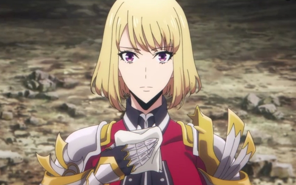
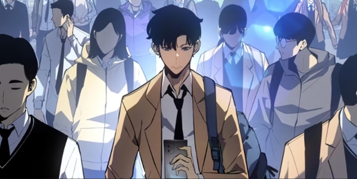

Sung Jinwoo is the main protagonist of Solo Leveling.
He is the strongest hunter in the world and the second Shadow Monarch, inheriting the position from his predecessor Ashborn.
Jinwoo is a humble and benevolent individual who cares deeply for his family and has an ardent desire to become stronger.
As a result, he shares a close relationship with his sister and his mother, and rarely wastes an opportunity to refine his skills and gain more power.

The S-Rank Hunter, Cha Hae-In
Cha Hae-In
Cha Hae-In is a Korean S-Rank Hunter who specializes in swordsmanship.
She has a rare condition where other hunters smell foul to her, but Jinwoo is the only one who smells nice.
Cha's relationship with Jinwoo was somewhat one-sided. While he thought little of her, she was deeply interested in him due to the fact that he was the first hunter she had ever met who smelled nice to her.
Eventually, Cha developed romantic feelings for Jinwoo and those feelings became serious enough that she would lose her composure in front of him whenever he teased her over any reason.

Sung Suho, the son of Sung Jinwoo
Sung Suho
The 16-year-old son of Sung Jinwoo and Cha Hae-In.
He inherited some of his father's powers, but they were sealed to let him live a normal life.
Suho is a tall, handsome, and muscular young man with gray eyes and black hair, both inherited from his father.
His facial features closely resemble his mother's, sharing the same softer traits.
When using his powers or experiencing intense emotions, his eyes glow blue.